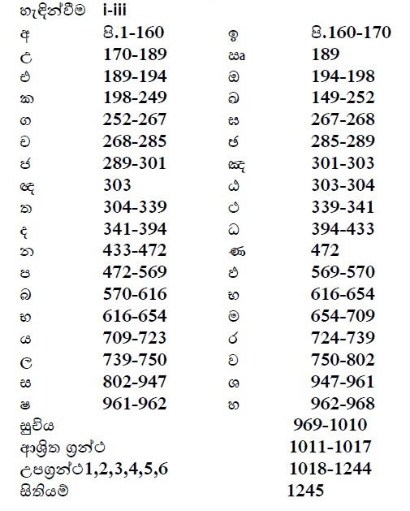

දහම් පද මාලාව
Garland of Dhamma Words
නමෝ තස්ස භගවතෝ අරහතෝ සම්මා
සම්බුද්ධස්ස
භාග්යවත්වූ අරහත්වූ සම්මා සම්බුදුරජාණන්
වහන්සේට
අපගේ නමස්කාරය වේවා!!!
හැදින්වීම
පසුගිය වසර කිහිපයේදී ත්රිපිටකය හදාරනවිට අපගේ විශේෂ අවධානයට හසුවූ දහම්පද හා ඒවාට අදාළ කරුණු ඇතුලත්කර සටහන් ගොනුවක් සකස්කරන ලදී. දහම් පද මාලාව එම සටහන් එකතු කර පිළියෙළ කළ සංසේකරණයකි. මේ කෘතියේ මූලික පරමාර්ථය, සිංහලෙන් දහම ඉගනගන්නා කෙනෙකුට සූත්රවල සඳහන් විෂය කරුණු පහසුවෙන් සොයාගැනීමට උපකාරිවිමය.
▲ මෙහිදී සිංහල හා පාලි වචන හා විස්තර එකතුකර ගැනීමට මූලිකව භාවිතා කළේ බුද්ධ ජයන්ති ත්රිපිටක පොත් පෙළය:
දීඝනිකාය: දීඝ.නි.
මජ්ජිමනිකාය: ම.නි.
සංයුත්තනිකාය: සංයු.නි.
අංගුත්තරනිකාය: අංගු.නි.
ඛුද්දකනිකාය: ඛු.නි
විනයපිටකය: වින.පි.
අභිධර්මපිටකය: අභි.ධ.පි.
▼ ඉංග්රීසයයන් ලියවුන මතු සඳහන් කෘතින්, සූත්ර විසේතර පැහැදිලි කරගැනීම පිණිස භාවිතා කරනලදී:
Anguttara Nikaya: EAN
Digha Nikaya: EDN
Majjhima Nikaya: EMN
Samyutta Nikāya: ESN
සටහන: පරිහරණය කල ත්රිපිටක පිටක පොත් විස්තර ආශ්රිත ග්රන්ථ පහත දක්වා ඇත.
▲ පරිහරණය කළ ශබ්දකෝෂ:
▼ සිංහල ශබ්දකෝෂය:
▼English Dictionaries:
- B. D: “Buddhist Dictionary”: Manual of Buddhist Terms & Doctrines by Ven.Nyanatiloka
- E.P.D: “English-Pāli Dictionary” by A. P. Buddhadatta Mahathera
- G.B: “The Seeker’s Glossary of Buddhism” by Buddha Dharma Education Association
- P.T.S: “Pāli English Dictionary” by The Pali Text Society
විෂය කරුණු
▲ විෂය කරුණු කොටස් කර ඇත්තේ සිංහල අකාරාදියට අනුවය:
අ,ඉ,උ,ඍ,එ,ඔ,ක,ඛ,ග,ඝ,ච,ඡ,ජ,ඤ,ඥ, ඨ,ත,ථ,ද,ධ,න,ප,බ,භ,ම,ය,ර,ල,ව,ස,ශ,ෂ,හ
උදාහරන: අ අකුරඇතුලත් මුලික පද ඉදිරිපත් කර ඇත්තේ: අ කොටස ලෙසින්ය. ඉ අකුර ඇතුලත් මුලික පද ඉදිරිපත් කර ඇත්තේ: ඉ කොටස ලෙසින්ය.
▲ උපග්රන්තථ
විෂය කරුණු සම්බන්ධ අතිරේක විස්තර උපග්රන්ථ ලෙසින් ඉදිරිපත්කර ඇත:
- උපග්රන්තථය 1: ශ්රාවක භික්ඛු සංඝ
- උපග්රන්තථය 2: ශ්රාවක භික්ෂුණි සංඝ:
- උපග්රන්තථය 3: බුදුන්සරණ ගිය උපාසක උපාසිකා
- උපග්රන්තථය 4: බුදුසසුන අත්හල සංඝයා
- උපග්රන්තථය 5: උපමා විස්තර
- උපග්රන්තථය 6: අපගේ ගෝතම බුදුන් වහන්සේ පිලිබඳ මුලික විස්තර.
පටුන
පොතේ කොටස්
- අ කොටස (පිටු 1 සිට 160).
- ඉ - ජ කොටස් (පිටු 160 සිට 301).
- ඤ - ණ කොටස් (පිටු 301 සිට 472).
- ප - බ කොටස් (පිටු 472 සිට 616).
- භ - ල කොටස් (පිටු 616 සිට 750).
- ව කොටස (පිටු 750 සිට 802).
- ස කොටස (පිටු 802 සිට 947).
- ශ - හ කොටස් (පිටු 947 සිට 968).
- සුචිය (පිටු 969 සිට 1017).
- උපග්රන්ථ (පිටු 1018 සිට 1244).
- සිතියම් (පිටු 1245 සිට 1247).
About
To be added.
Contact
To be added
දහම් පද මාලාව පොත ලබාගැනීම සඳහා
DOWNLOAD DahamPadaMalawa.pdfඅනුග්රහය
ශාන්ති-භික්ඛුණි වනආරණ්ය සේනාසනය
නිව් සවුත් වේල්ස් ප්රාන්තය
ඕස්ට්රේලියාව වෙබ්අඩවිය: www.santifm.org Email: santioffice@gmail.comලිපිනය: P.O .Box 132 100 Coalmines Road NSW 2578 Australia
Supported by
Santi - Buddhist Nuns Forest Monastery
P.O .Box 132 100 Coalmines Road NSW 2578 Australia